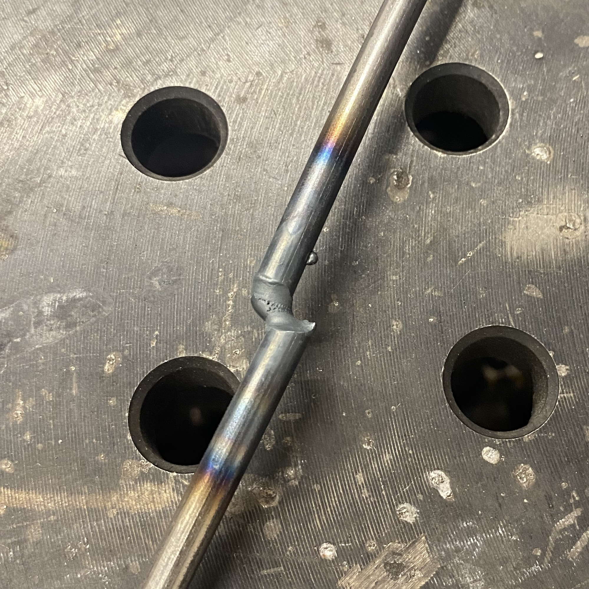
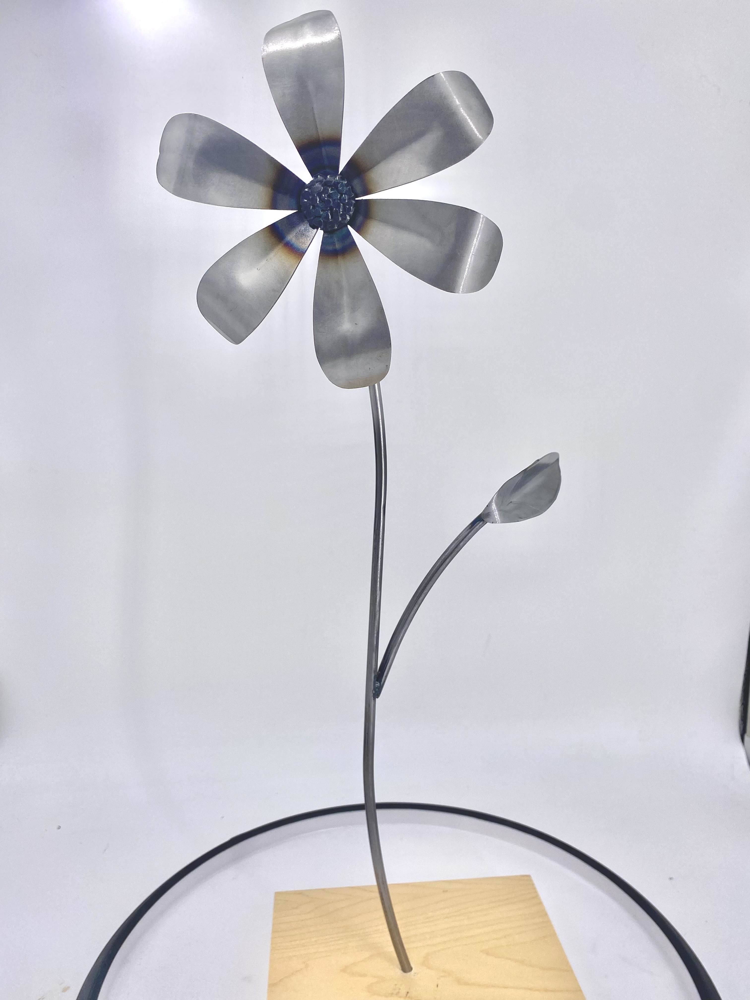

As a continuation of my welded flower bouquet project, I TIG-welded a daisy! TIG is typically used for more precise and intricate projects, so it was ideal for this flower.
After laser-cutting my petal .dxf file, I used bending and rolling techniques to transform the flat pieces on the left into the detailed petals on the right.
With some additional behind-the-scenes cutting, bending, and rolling for my other pieces, I was ready to start welding. My biggest challenge was learning the sensitivity of the TIG foot pedal, which controls the amperage (and thus heat) applied to the metal. A heavy foot on the pedal during stem welding resulted in what I can only describe as “blowing up in my face.” The heat was too intense for the thin rod, and it very uniquely split, emitting a cloud of sparks.
With a quick rod substitution, I finished welding and coated the flower with a rust-preventing gloss. I found TIG welding flowers much more appropriate than MIG because of its delicacy and smooth weld profile. I think I will continue the rest of my flowers with TIG. Still, MIG was not left out: the texture of the center of the daisy was created with the MIG torch!
Check out the final results below!
